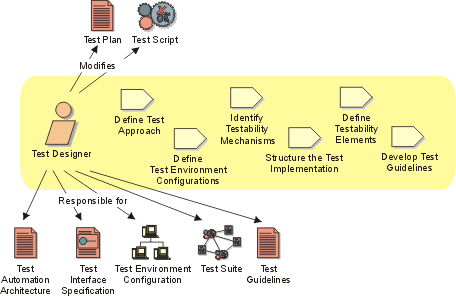

Role:
Test Designer
The Test Designer role is responsible for defining the test approach and ensuring
it's successful implementation. The role involves identifying the appropriate
techniques, tools and guidelines to implement the required tests, and to give
guidance on the corresponding resources requirements for the test effort. Sometimes
this role is also referred to as the Test Architect, Test Automation
Architect or Test Automation Specialist. This role is responsible for:
- Identifying and describing appropriate test techniques
- Identifying the appropriate supporting tools
- Defining and maintaining a Test Automation Architecture
- Specifying and verifying the required Test Environment Configurations
- Verify and assess the Test Approach

Staffing 
Roles organize the responsibility for performing activities and developing
artifacts into logical groups. Each role can be assigned to one or more people,
and each person can fill one or more roles. When staffing the Test Designer
role, you need to consider both the skills required for the role and the different
approaches you can take to assigning staff to the role.
Skills
The appropriate skills and knowledge for the Test Designer role include:
- experience in a variety of testing efforts
- diagnostic and problem solving skills
- broad knowledge of hardware and software installation and setup
- experience and success with the use of test automation tools
- programming skills (preferable)
- programming team lead and software design skills (highly desirable)
- indepth knowledge of the system or application-under-test (desirable)
Role assignment approaches
The Test Designer role can be assigned in the following ways:
- Assign one staff member to perform the Test Designer role only. This is
a commonly adopted approach and is particularly suitable for large to mid-sized
teams.
- Assign one staff member to perform both the Test Designer and Test Manager
roles. This strategy is a good option for small test teams. A person filling
both these roles needs to have strong management and leadership skills as
well as strong technical skills and experience.
- Assign one staff member to perform both the Test Designer and Software
Architect roles. This strategy is also an option for small test teams. A
person filling both these roles needs to have strong technical skills and
experience in software design and usually skills and experience test automation.
- Assign one staff member to perform both the Test Designer and Test Analyst
roles. This strategy is another option for small to mid-sized test teams.
You need to be careful that the minutia of the Test Analyst role does not
adversely effect the responsibilities of the Test Designer role. Mitigate
that risk by assigning less critical Test Analyst tasks to a person filling
both these roles, leaving the most important tasks to team members without
the Test Designer responsibilities.
Further Information
We recommend recommend reading Kaner, Bach & Pettichord's Lessons Learned
in Software Testing [KAN99], which contains
an excellent collection of important concerns for test teams. Of special interest
to the Test Designer role are the chapters on Testing techniques, Test
automation and Test planning and strategy.
Copyright
© 1987 - 2001 Rational Software Corporation
|  Roles and Activities >
Roles and Activities >
 Test Designer
Test Designer